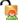

Àkura Help
Manage System Users
Navigation: Select User
Management Module->Manage System Users
Using this page, you can search, add, edit, unlock,
enable/disable and delete users in the system.
Search System User
- Enter the username.
- Select the user role from the User Role drop-down list.
- Click the Search button to get the search
results.
Add New System User
- The system redirects to the System User Details page.
Note: Fields marked with an asterisk (*) are
mandatory.
Edit System User
- The system redirects to the System User Details page
and displays
the selected details.
Locked Users
Note: If you enter an incorrect password more than three times, your user account will get locked.- Locked users appear with the Locked button.
Unlock User
Note: Only administrators can unlock users.
- Click the Locked button.
- Click OK to unlock the user.
- Unlocked users appear with the Unlocked button.
Enable/Disable
User
- Click the Enable
 or the Disable button.
or the Disable button.
- Click OK to enable or disable the selected user.
Delete User
- Click the Delete
 button. The selected row is highlighted in yellow.
button. The selected row is highlighted in yellow.
- Click OK to confirm the deletion or click Cancel to cancel
the deletion.
Note: Administrators can only delete disabled/locked users.